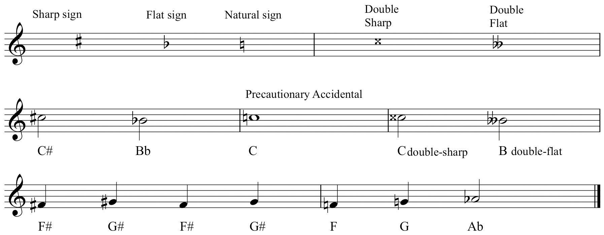
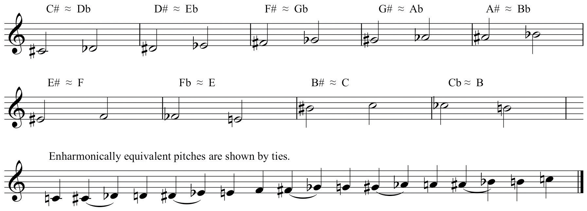
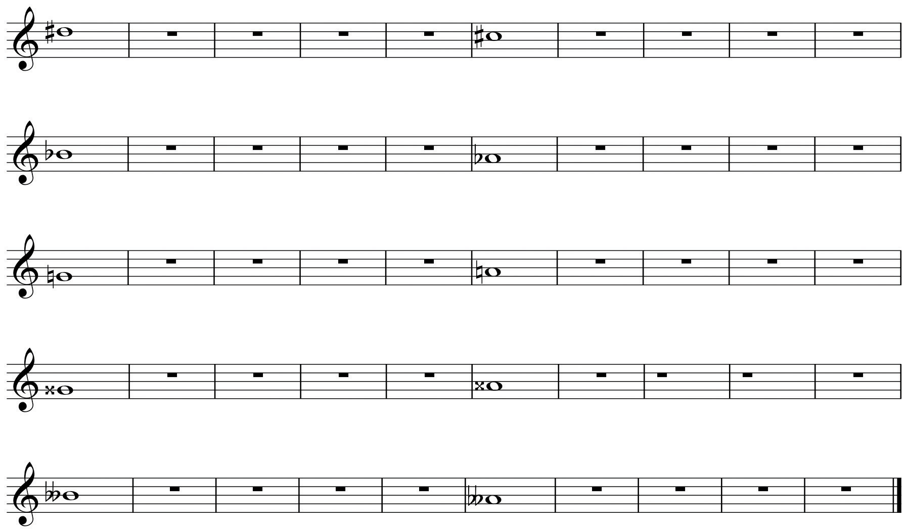
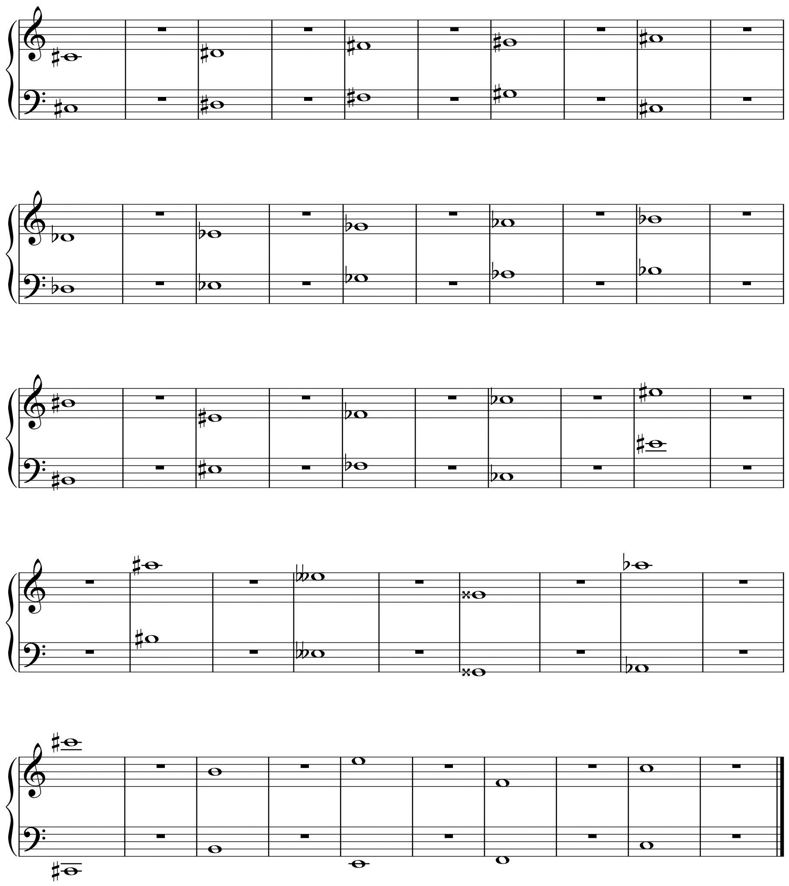

The term diatonic denotes pitches that occur naturally in a theoretical system of music with respect to its components. A simplistic (and incorrect) view describes diatonic pitches as “the white notes” on the piano. The word chromatic comes from the Greek word for “color,” kromos. In early music, this term was employed to describe those pitches lying outside of the theoretical collection of pitches, pitches that were altered for various reasons. The term chromaticismChromaticism refers to those altered pitches that lie “outside” the range of a particular collection. will recur from time to time to describe altered pitches and their effects in music.
Early music made use of a fixed number of pitches organized into a system of overlapping six-tone sequences (hexachords). As compositional styles evolved and new resources added, composers routinely altered pitches for a variety of reasons. Sometimes a pitch was considered to sound too “hard” and was therefore “softened” (lowered). Sometimes pitches were altered (raised) to provide a more pronounced resolution to a following pitch. These altered pitches were called musica ficta (“contrived” or “feigned” music; “false” music). Originally the conditional use of these alterations was understood, therefore not notated. In time, the symbols representing an altered pitch were added above the note, almost as an editorial marking. Eventually these symbols were incorporated into the music, preceding the note they modified.
These symbols became what we call accidentalsAccidentals are those specialized symbols used to show chromatic alterations.. The need for these alterations came about because of our inherently flawed system of notating pitch: we have twelve pitches in our system yet only seven letter names. Accidentals accommodate these alterations. The “sharp” sign (the octothorpe or “pound” sign) raises a pitch, the “flat” sign (lower-case “b”) lowers a pitch. The natural sign cancels any other accidental. Double flats and double sharps may occur occasionally, their use determined by context.
Figure 2.8 Accidentals
Accidentals are always placed before the note that they modify, never behind. As a notational convenience, an accidental will stay in effect throughout the measure where it occurs. Any repetitions of that modified note within the measure remain modified. The note reverts to its diatonic form in subsequent measures.In much music of the modern era, accidentals only modify those notes that they immediately precede. If this is the case, it is so indicated in performance notes. Often however, as a reminder, composers will place a precautionary accidental before the note that was previously chromatically altered.
All pitches, but chromatic pitches especially, may be “spelled” in different ways. These differing spellings are context-dependent (or a matter of convenience) as will be discussed below. Notes that share the same pitch space but employ different spellings are said to be enharmonically equivalent. Enharmonic equivalenceEnharmonic equivalence describes pitches that share the same pitch-space (sound identical) but are “spelled” differently. is an attribute that will come to have greater significance as our argument progresses.
Figure 2.9 Enharmonic Equivalents
On the example provided, practice drawing notes with accidentals.
Figure 2.10 Accidental Samples
On the example provided, draw the enharmonic equivalent for each note listed.
Figure 2.11 Enharmonic Equivalents
